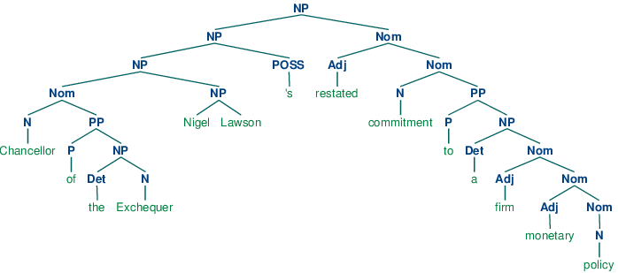
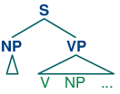

8. Analyzing Sentence Structure (Extras)
1 Chunking vs Parsing
You might be asking what's new about phrasal constituents, since they are very similar to the chunks presented in 7.. To answer this, let's return to the challenge of making explicit how a sentence says "who did what to whom". Let's just focus for a while on the "who" part of this story. As a first approximation, we'll say that this amounts to telling what the grammatical subject of a sentence is. Can we do this using chunks? Based on the techniques described in 7., a chunking analysis of (6) will look as follows:
(S (NP the/DT little/JJ bear/NN) saw/VBD (NP the/DT fine/JJ fat/JJ trout/NN) in/IN (NP the/DT brook/NN))
So we might adopt the heuristic that the subject of a sentence is the NP chunk that immediately precedes the tensed verb: this would correctly yield (NP the/DT little/JJ bear/NN) as subject. Unfortunately, this simple rule very quickly fails, as shown by a more complex example.
|
What's doing the "preventing" in this example is not the firm monetary policy, but rather the restated commitment to such a policy. We can also see from this example that a different simple rule, namely treating the initial NP chunk as the subject, also fails, since this would give us the (NP the/DT Exchequer/NNP). By contrast, a complete phrase structure analysis of the sentence would group together all the pre-verbal NP chunks into a single NP constituent:
| (1) |  |
We still have a little work to determine which part of this complex NP corresponds to the "who", but nevertheless, this is much more tractable than answering the same question from a flat sequence of chunks.
"Subject" and "direct object" are examples of grammatical functions. Although they are not captured directly in a phrase structure grammar, they can be defined in terms of tree configurations. In (2), the subject of S is the NP immediately dominated by S while the direct object of V is the NP directly dominated by VP.
| (2) |  |
2 Chart Parsing
Chart Parsing is a parsing algorithm that uses dynamic programming, a technique described in 4.7. It extends the method of well-formed substring tables from 4.
2.1 Active Charts
The content of a WFST can be represented in a directed acyclic graph, as shown in (3a) for the initialized WFST and (3b) for the completed WFST.
| (3) |
|


In general, a chart parser hypothesizes constituents (i.e. adds edges) based on the grammar, the tokens, and the constituents already found. Any constituent that is compatible with the current knowledge can be hypothesized; even though many of these hypothetical constituents will never be used in the final result. A WFST just records these hypotheses.
All of the edges that we've seen so far represent complete constituents. However, it is helpful to record incomplete constituents, to document the work already done by the parser. For example, when a top-down parser processes VP → V NP PP, it may find V and NP but not the PP. This work can be reused when processing VP → V NP. Thus, we will record the hypothesis that "the V constituent likes is the beginning of a VP."
We can do this by adding a dot to the edge's right hand side. Material to the left of the dot records what has been found so far; material to the right of the dot specifies what still needs to be found in order to complete the constituent. For example, the edge in (4) records the hypothesis that "a VP starts with the V likes, but still needs an NP to become complete":
| (4) |  |
These dotted edges are used to record all of the hypotheses that a chart parser makes about constituents in a sentence.
2.2 Types of Edge
Let's take stock. An edge [VP → • V NP PP, (i, i)] records the hypothesis that a VP begins at location i, and that we anticipate finding a sequence V NP PP starting here. This is known as a self-loop edge; see (5a). An edge [VP → V • NP PP, (i, j)] records the fact that we have discovered a V spanning (i, j), and hypothesize a following NP PP sequence to complete a VP beginning at i. This is known as an incomplete edge; see (5b). An edge [VP → V NP PP • , (i, k)] records the discovery that a VP consisting of the sequence V NP PP has been discovered for the span (i, j). This is known as a complete edge; see (5c). If a complete edge spans the entire sentence, and has the grammar's start symbol as its left-hand side, then the edge is called a parse edge, and it encodes one or more parse trees for the sentence; see (5c).
| (5) |
|


2.3 The Chart Parser
To parse a sentence, a chart parser first creates an empty chart spanning the sentence. It then finds edges that are licensed by its knowledge about the sentence, and adds them to the chart one at a time until one or more parse edges are found. The edges that it adds can be licensed in one of three ways:
- The input can license an edge: each word wi in the input licenses the complete edge [wi → •, (i, i+1)].
- The grammar can license an edge: each grammar production A → α licenses the self-loop edge [A → • α, (i, i)] for every i, 0 ≤ i < n.
- The current chart contents can license an edge: a suitable pair of existing edges triggers the addition of a new edge.
Chart parsers use a set of rules to heuristically decide when an edge should be added to a chart. This set of rules, along with a specification of when they should be applied, forms a strategy.
2.4 The Fundamental Rule
One rule is particularly important, since it is used by every chart parser: the Fundamental Rule. This rule is used to combine an incomplete edge that's expecting a nonterminal B with a following, complete edge whose left hand side is B. The rule is defined and illustrated in (6). We will use α, β, and γ to denote (possibly empty) sequences of terminals or non-terminals.
| (6) | Fundamental Rule If the chart contains the edges [A → α•Bβ, (i, j)] and [B → γ•, (j, k)] then add a new edge [A → αB•β, (i, k)].
|

In the new edge, the dot has moved one place to the right. Its span is the combined span of the original edges. Note that in adding this new edge we do not remove the other two, because they might be used again.
2.5 Bottom-Up Parsing
As we saw with the shift-reduce parser in 4, bottom-up parsing starts from the input string, and tries to find sequences of words and phrases that correspond to the right hand side of a grammar production. The parser then replaces these with the left-hand side of the production, until the whole sentence is reduced to an S. Bottom-up chart parsing is an extension of this approach in which hypotheses about structure are recorded as edges on a chart. In terms of our earlier terminology, bottom-up chart parsing can be seen as a parsing strategy; in other words, bottom-up is a particular choice of heuristics for adding new edges to a chart.
The general procedure for chart parsing is inductive: we start with a base case, and then show how we can move from a given state of the chart to a new state. Since we are working bottom-up, the base case for our induction will be determined by the words in the input string, so we add new edges for each word. Now, for the induction step, suppose the chart contains an edge labeled with constituent A. Since we are working bottom-up, we want to build constituents that can have an A as a child. In other words, we are going to look for productions of the form B → A β and use these to label new edges.
Let's look at the procedure a bit more formally. To create a bottom-up chart parser, we add to the Fundamental Rule two new rules: the Bottom-Up Initialization Rule; and the Bottom-Up Predict Rule. The Bottom-Up Initialization Rule says to add all edges licensed by the input.
| (7) | Bottom-Up Initialization Rule For every word wi add the edge [wi → • , (i, i+1)]
|

Next, suppose the chart contains a complete edge e whose left hand category is A. Then the Bottom-Up Predict Rule requires the parser to add a self-loop edge at the left boundary of e for each grammar production whose right hand side begins with category A.
| (8) | Bottom-Up Predict Rule For each complete edge [A → α•, (i, j)] and each production B → Aβ, add the self-loop edge [B → •Aβ, (i, i)]
|

The next step is to use the Fundamental Rule to add edges like [NP → Lee • , (0, 1)], where we have "moved the dot" one position to the right. After this, we will now be able to add new self-loop edges such as [S → • NP VP, (0, 0)] and [VP → • VP NP, (1, 1)], and use these to build more complete edges.
Using these three rules, we can parse a sentence as shown in (9).
| (9) |
Create an empty chart spanning the sentence. Apply the Bottom-Up Initialization Rule to each word. Until no more edges are added: Apply the Bottom-Up Predict Rule everywhere it applies. Apply the Fundamental Rule everywhere it applies. Return all of the parse trees corresponding to the parse edges in the chart. |
Note
Your Turn: NLTK provides a useful interactive tool for visualizing the operation of a chart parser: nltk.app.chartparser(). The tool comes with a pre-defined input string and grammar, but both of these can be readily modified with options inside the Edit menu.
2.6 Top-Down Parsing
Top-down chart parsing works in a similar way to the recursive descent parser, in that it starts off with the top-level goal of finding an S. This goal is broken down into the subgoals of trying to find constituents such as NP and VP predicted by the grammar. To create a top-down chart parser, we use the Fundamental Rule as before plus three other rules: the Top-Down Initialization Rule, the Top-Down Expand Rule, and the Top-Down Match Rule. The Top-Down Initialization Rule in (10) captures the fact that the root of any parse must be the start symbol S.
| (10) | Top-Down Initialization Rule For each production S → α add the self-loop edge [S → •α, (0, 0)]
|

In our running example, we are predicting that we will be able to find an NP and a VP starting at 0, but have not yet satisfied these subgoals. In order to find an NP we need to invoke a production that has NP on its left hand side. This work is done by the Top-Down Expand Rule (11). This tells us that if our chart contains an incomplete edge whose dot is followed by a nonterminal B, then the parser should add any self-loop edges licensed by the grammar whose left-hand side is B.
| (11) | Top-Down Expand Rule For each incomplete edge [A → α•Bβ, (i, j)] and for each grammar production B → γ, add the edge [B → •γ, (j, j)]
|

The Top-Down Match rule allows the predictions of the grammar to be matched against the input string. Thus, if the chart contains an incomplete edge whose dot is followed by a terminal w, then the parser should add an edge if the terminal corresponds to the current input symbol.
| (12) | Top-Down Match Rule For each incomplete edge [A → α•wj β, (i, j)], where wj is the j th word of the input (counting from zero), add a new complete edge [wj → •, (j, j+1)]
|

Here we see our example chart after applying the Top-Down Match rule. After this, we can apply the fundamental rule to add the edge [NP → Lee • , (0, 1)].
Using these four rules, we can parse a sentence top-down as shown in (13).
| (13) |
Create an empty chart spanning the sentence. Apply the Top-Down Initialization Rule (at node 0) Until no more edges are added: Apply the Top-Down Expand Rule everywhere it applies. Apply the Top-Down Match Rule everywhere it applies. Apply the Fundamental Rule everywhere it applies. Return all of the parse trees corresponding to the parse edges in the chart. |
2.7 The Earley Algorithm
The Earley algorithm (Earley, 1970) is a parsing strategy that resembles the Top-Down Strategy, but deals more efficiently with matching against the input string. 2.1 shows the correspondence between the parsing rules introduced above and the rules used by the Earley algorithm.
| Top-Down/Bottom-Up | Earley |
|---|---|
| Top-Down Initialization Rule Top-Down Expand Rule | Predictor Rule |
| Top-Down/Bottom-Up Match Rule | Scanner Rule |
| Fundamental Rule | Completer Rule |
2.8 Chart Parsing in NLTK
NLTK defines a simple yet flexible chart parser, ChartParser. A new chart parser is constructed from a grammar and a strategy. The strategy is applied until no new edges are added to the chart. NLTK defines two ready-made strategies: TD_STRATEGY, a basic top-down strategy; and BU_STRATEGY, a basic bottom-up strategy. When constructing a chart parser, you can use either of these strategies, or create your own. We've already seen how to define a chart parser in 1. This time we'll specify a strategy and turn on tracing:
|
The next two sections introduce two probabilistic parsing algorithms for PCFGs. The first is an A* parser that uses dynamic programming to find the single most likely parse for a given text. Whenever it finds multiple possible parses for a subtree, it discards all but the most likely parse. The second is a bottom-up chart parser that maintains a queue of edges, and adds them to the chart one at a time. The ordering of this queue is based on the probabilities associated with the edges, allowing the parser to expand more likely edges before less likely ones. Different queue orderings are used to implement a variety of different search strategies. These algorithms are implemented in the nltk.parse.viterbi and nltk.parse.pchart modules.
2.9 A* Parser
An A* Parser is a bottom-up PCFG parser that uses dynamic programming to find the single most likely parse for a text (Klein & Manning, 2003). It parses texts by iteratively filling in a most likely constituents table. This table records the most likely tree for each span and node value. For example, after parsing the sentence "I saw the man with the telescope" with the grammar cfg.toy_pcfg1, the most likely constituents table contains the following entries (amongst others):
| Span | Node | Tree | Prob |
|---|---|---|---|
| [0:1] | NP | (NP I) | 0.15 |
| [6:7] | NP | (NN telescope) | 0.5 |
| [5:7] | NP | (NP the telescope) | 0.2 |
| [4:7] | PP | (PP with (NP the telescope)) | 0.122 |
| [0:4] | S | (S (NP I) (VP saw (NP the man))) | 0.01365 |
| [0:7] | S | (S (NP I) (VP saw (NP (NP the man) (PP with (NP the telescope))))) | 0.0004163250 |
Once the table has been completed, the parser returns the entry for the most likely constituent that spans the entire text, and whose node value is the start symbol. For this example, it would return the entry with a span of [0:6] and a node value of "S".
Note that we only record the most likely constituent for any given span and node value. For example, in the table above, there are actually two possible constituents that cover the span [1:6] and have "VP" node values.
- "saw the man, who has the telescope":
- (VP saw
- (NP (NP John)
- (PP with (NP the telescope))))
- "used the telescope to see the man":
- (VP saw
- (NP John) (PP with (NP the telescope)))
Since the grammar we are using to parse the text indicates that the first of these tree structures has a higher probability, the parser discards the second one.
Filling in the Most Likely Constituents Table: Because the grammar used by ViterbiParse is a PCFG, the probability of each constituent can be calculated from the probabilities of its children. Since a constituent's children can never cover a larger span than the constituent itself, each entry of the most likely constituents table depends only on entries for constituents with shorter spans (or equal spans, in the case of unary and epsilon productions).
ViterbiParse takes advantage of this fact, and fills in the most likely constituent table incrementally. It starts by filling in the entries for all constituents that span a single element of text. After it has filled in all the table entries for constituents that span one element of text, it fills in the entries for constituents that span two elements of text. It continues filling in the entries for constituents spanning larger and larger portions of the text, until the entire table has been filled.
To find the most likely constituent with a given span and node value, ViterbiParse considers all productions that could produce that node value. For each production, it checks the most likely constituents table for sequences of children that collectively cover the span and that have the node values specified by the production's right hand side. If the tree formed by applying the production to the children has a higher probability than the current table entry, then it updates the most likely constituents table with the new tree.
Handling Unary Productions and Epsilon Productions: A minor difficulty is introduced by unary productions and epsilon productions: an entry of the most likely constituents table might depend on another entry with the same span. For example, if the grammar contains the production V → VP, then the table entries for VP depend on the entries for V with the same span. This can be a problem if the constituents are checked in the wrong order. For example, if the parser tries to find the most likely constituent for a VP spanning [1:3] before it finds the most likely constituents for V spanning [1:3], then it can't apply the V → VP production.
To solve this problem, ViterbiParse repeatedly checks each span until it finds no new table entries. Note that cyclic grammar productions (e.g. V → V) will not cause this procedure to enter an infinite loop. Since all production probabilities are less than or equal to 1, any constituent generated by a cycle in the grammar will have a probability that is less than or equal to the original constituent; so ViterbiParse will discard it.
In NLTK, we create Viterbi parsers using ViterbiParse(). Note that since ViterbiParse only finds the single most likely parse, that nbest_parse() will never return more than one parse.
| ||
| ||
Example 2.1 (code_viterbi_parse.py): Figure 2.1: Example of a Viterbi Parser |
The trace method can be used to set the level of tracing output that is generated when parsing a text. Trace output displays the constituents that are considered, and indicates which ones are added to the most likely constituent table. It also indicates the likelihood for each constituent.
|
2.10 A Bottom-Up PCFG Chart Parser
The A* parser described in the previous section finds the single most likely parse for a given text. However, when parsers are used in the context of a larger NLP system, it is often necessary to produce several alternative parses. In the context of an overall system, a parse that is assigned low probability by the parser might still have the best overall probability.
For example, a probabilistic parser might decide that the most likely parse for "I saw John with the cookie" is the structure with the interpretation "I used my cookie to see John"; but that parse would be assigned a low probability by a semantic system. Combining the probability estimates from the parser and the semantic system, the parse with the interpretation "I saw John, who had my cookie" would be given a higher overall probability.
A probabilistic bottom-up chart parser maintains an edge queue, and adds these edges to the chart one at a time. The ordering of this queue is based on the probabilities associated with the edges, and this allows the parser to insert the most probable edges first. Each time an edge is added to the chart, it may become possible to insert further edges, so these are added to the queue. The bottom-up chart parser continues adding the edges in the queue to the chart until enough complete parses have been found, or until the edge queue is empty.
Like an edge in a regular chart, a probabilistic edge consists of a dotted production, a span, and a (partial) parse tree. However, unlike ordinary charts, this time the tree is weighted with a probability. Its probability is the product of the probability of the production that generated it and the probabilities of its children. For example, the probability of the edge [Edge: S → NP•VP, 0:2] is the probability of the PCFG production S → NP VP multiplied by the probability of its NP child. (Note that an edge's tree only includes children for elements to the left of the edge's dot.)
2.11 Bottom-Up PCFG Strategies
The edge queue is a sorted list of edges that can be added to the chart. It is initialized with a single edge for each token, with the form [Edge: token → •]. As each edge from the queue is added to the chart, it may become possible to add further edges, according to two rules: (i) the Bottom-Up Initialization Rule can be used to add a self-loop edge whenever an edge whose dot is in position 0 is added to the chart; or (ii) the Fundamental Rule can be used to combine a new edge with edges already present in the chart. These additional edges are queued for addition to the chart.
By changing the sort order used by the queue, we can control the strategy that the parser uses to explore the search space. Since there are a wide variety of reasonable search strategies, BottomUpChartParser() does not define any sort order. Instead, different strategies are implemented in subclasses of BottomUpChartParser().
Lowest Cost First: The simplest way to order the edge queue is to sort edges by the probabilities of their associated trees. This ordering concentrates the efforts of the parser on those edges that are more likely to be correct analyses of their corresponding input tokens. Now, the probability of an edge's tree provides an upper bound on the probability of any parse produced using that edge. The probabilistic "cost" of using an edge to form a parse is one minus its tree's probability. Thus, inserting the edges with the most likely trees first results in a lowest-cost-first search strategy. Lowest-cost-first search turns out to be optimal: the first solution it finds is guaranteed to be the best solution (cf the A* parser).
However, lowest-cost-first search can be rather inefficient. Recall that a tree's probability is the product of the probabilities of all the productions used to generate it. Consequently, smaller trees tend to have higher probabilities than larger ones. Thus, lowest-cost-first search tends to work with edges having small trees before considering edges with larger trees. Yet any complete parse of the text will necessarily have a large tree, and so this strategy will tend to produce complete parses only once most other edges are processed.
Let's consider this problem from another angle. The basic shortcoming with lowest-cost-first search is that it ignores the probability that an edge's tree will be part of a complete parse. The parser will try parses that are locally coherent even if they are unlikely to form part of a complete parse. Unfortunately, it can be quite difficult to calculate the probability that a tree is part of a complete parse. However, we can use a variety of techniques to approximate that probability.
Best-First Search: This method sorts the edge queue in descending order of the edges' span, on the assumption that edges having a larger span are more likely to form part of a complete parse. This is a best-first search strategy, since it inserts the edges that are closest to producing complete parses before trying any other edges. However, best-first search is not optimal: the first solution it finds is not guaranteed to be the best solution. However, it will usually find a complete parse much more quickly than lowest-cost-first search.
Beam Search: When large grammars are used to parse a text, the edge queue can grow quite long. The edges at the end of a long queue are unlikely to be used. Therefore, it is reasonable to remove these edges from the queue. This strategy is known as beam search; it only keeps the best partial results. The bottom-up chart parsers take an optional parameter beam_size; whenever the edge queue grows longer than this, it is pruned. This parameter is best used in conjunction with InsideChartParser(). Beam search reduces the space requirements for lowest-cost-first search, by discarding edges that are not likely to be used. But beam search also loses many of lowest-cost-first search's more useful properties. Beam search is not optimal: it is not guaranteed to find the best parse first. In fact, since it might prune a necessary edge, beam search is not complete: it won't find every parse, and it is not even guaranteed to return a parse if one exists.
The code in 2.2 demonstrates how we define and use these probabilistic chart parsers in NLTK.
| ||
| ||
Example 2.2 (code_bottom_up_chart_parsers.py): Figure 2.2: Examples of Bottom-Up Chart Parsers |
The trace method can be used to set the level of tracing output that is generated when parsing a text. Trace output displays edges as they are added to the chart, and shows the probability for each edges' tree.
Note
Your Turn: Run the above example using tracing, by calling inside_parser.trace(3) before running the parser.
2.12 Grammar Induction
As we have seen, PCFG productions are just like CFG productions, adorned with probabilities. So far, we have simply specified these probabilities in the grammar. However, it is more usual to estimate these probabilities from training data, namely a collection of parse trees or treebank.
The simplest method uses Maximum Likelihood Estimation, so called because probabilities are chosen in order to maximize the likelihood of the training data. The probability of a production VP → V NP PP is p(V,NP,PP | VP). We calculate this as follows:
count(VP → V NP PP)
P(V,NP,PP | VP) = -------------------
count(VP → ...)
Here is a simple program that induces a grammar from a few parse trees in the Penn Treebank corpus:
|
2.13 Normal Forms
Grammar induction usually involves normalizing the grammar in various ways. NLTK trees support binarization (Chomsky Normal Form), parent annotation, Markov order-N smoothing, and unary collapsing:
|
These trees are shown in (14c).
| (14) |
|
About this document...
UPDATED FOR NLTK 3.0. This is a chapter from Natural Language Processing with Python, by Steven Bird, Ewan Klein and Edward Loper, Copyright © 2019 the authors. It is distributed with the Natural Language Toolkit [http://nltk.org/], Version 3.0, under the terms of the Creative Commons Attribution-Noncommercial-No Derivative Works 3.0 United States License [http://creativecommons.org/licenses/by-nc-nd/3.0/us/].
This document was built on Wed 4 Sep 2019 11:40:48 ACST